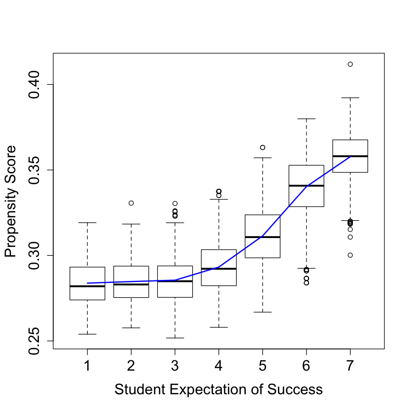
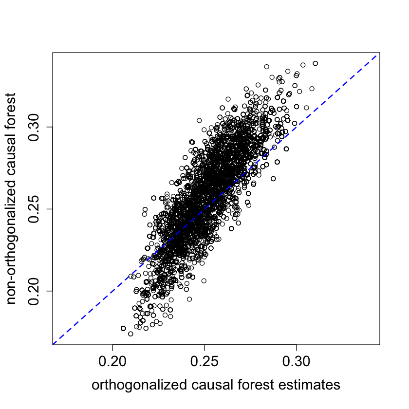
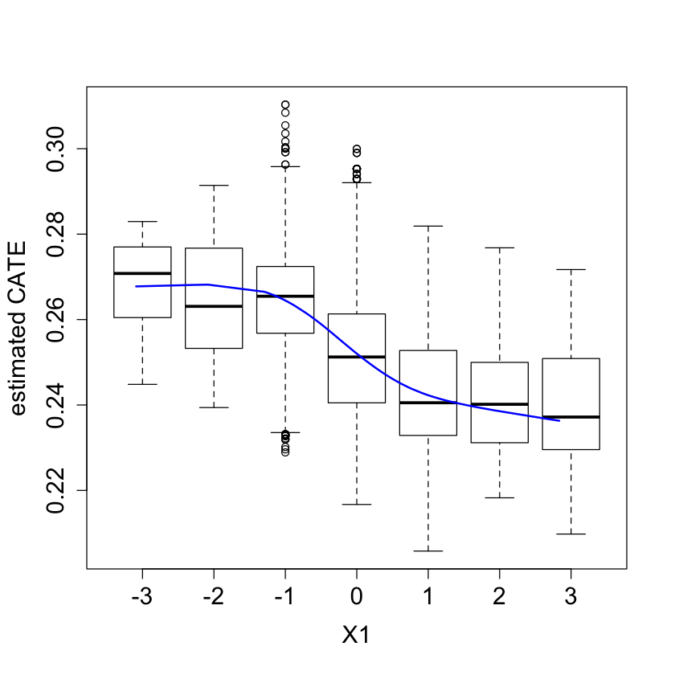
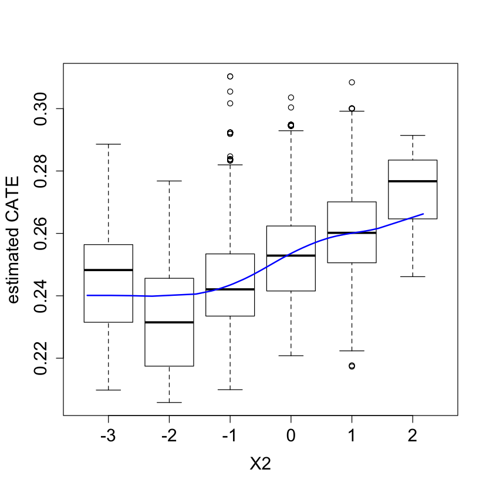
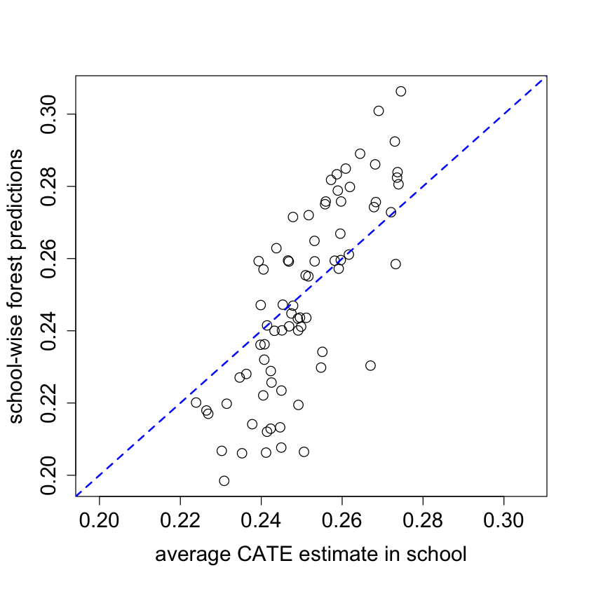
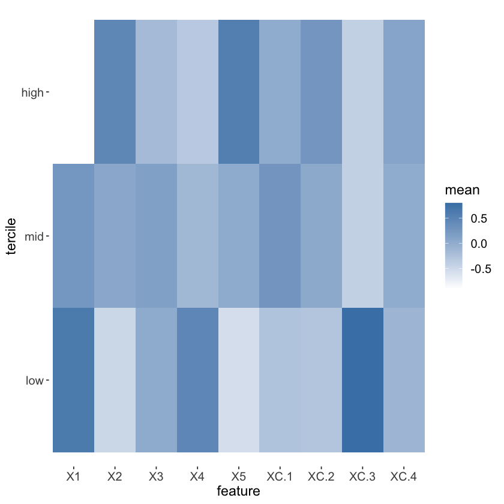
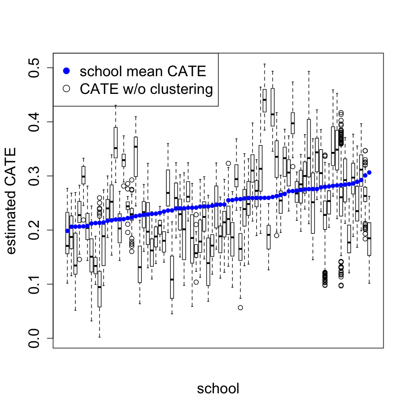

Causal Forests#
install.packages('grf')
The downloaded binary packages are in
/var/folders/8b/hhnbt0nd4zsg2qhxc28q23w80000gn/T//RtmpydKe1A/downloaded_packages
library('grf')
Warning message:
“package ‘grf’ was built under R version 3.6.2”
if(packageVersion("grf") < '0.10.2') {
warning("This script requires grf 0.10.2 or higher")
}
library(sandwich)
library(lmtest)
library(Hmisc)
library(ggplot2)
set.seed(1)
rm(list = ls())
data.all = read.csv("./data/synthetic_data.csv")
data.all$schoolid = factor(data.all$schoolid)
DF = data.all[,-1]
school.id = as.numeric(data.all$schoolid)
school.mat = model.matrix(~ schoolid + 0, data = data.all)
school.size = colSums(school.mat)
# It appears that school ID does not affect pscore. So ignore it
# in modeling, and just treat it as source of per-cluster error.
w.lm = glm(Z ~ ., data = data.all[,-3], family = binomial)
summary(w.lm)
Call:
glm(formula = Z ~ ., family = binomial, data = data.all[, -3])
Deviance Residuals:
Min 1Q Median 3Q Max
-1.2079 -0.9088 -0.8297 1.4176 1.9556
Coefficients: (6 not defined because of singularities)
Estimate Std. Error z value Pr(>|z|)
(Intercept) -0.9524636 0.2845173 -3.348 0.000815 ***
schoolid2 0.0697302 0.2766287 0.252 0.800986
schoolid3 0.0382080 0.2911323 0.131 0.895586
schoolid4 0.1761334 0.2784711 0.633 0.527059
schoolid5 -0.0033389 0.2950180 -0.011 0.990970
schoolid6 0.0583548 0.3067481 0.190 0.849124
schoolid7 -0.1313759 0.3188190 -0.412 0.680288
schoolid8 0.1233661 0.3023736 0.408 0.683279
schoolid9 -0.1955428 0.3073344 -0.636 0.524611
schoolid10 -0.1892794 0.2968750 -0.638 0.523752
schoolid11 -0.2224060 0.5461005 -0.407 0.683816
schoolid12 -0.3312420 0.5414374 -0.612 0.540682
schoolid13 -0.0408540 0.3989507 -0.102 0.918436
schoolid14 -0.8681934 0.6033674 -1.439 0.150175
schoolid15 -0.1059135 0.3263162 -0.325 0.745504
schoolid16 -0.1063268 0.2885387 -0.369 0.712500
schoolid17 0.0854323 0.3119435 0.274 0.784184
schoolid18 -0.1924441 0.2997822 -0.642 0.520908
schoolid19 -0.0265326 0.3229712 -0.082 0.934526
schoolid20 -0.2179554 0.3041336 -0.717 0.473594
schoolid21 -0.2147440 0.2982822 -0.720 0.471565
schoolid22 -0.5115966 0.4410779 -1.160 0.246098
schoolid23 0.0039231 0.3475373 0.011 0.990994
schoolid24 -0.0848314 0.3259572 -0.260 0.794668
schoolid25 0.0521087 0.2754586 0.189 0.849959
schoolid26 0.0241212 0.2876511 0.084 0.933171
schoolid27 -0.2300630 0.3104796 -0.741 0.458698
schoolid28 -0.3519010 0.2924774 -1.203 0.228909
schoolid29 -0.2198764 0.3293288 -0.668 0.504357
schoolid30 -0.3146292 0.3257994 -0.966 0.334187
schoolid31 0.1398555 0.6137901 0.228 0.819759
schoolid32 0.1555524 0.3916156 0.397 0.691215
schoolid33 -0.0991693 0.3939370 -0.252 0.801243
schoolid34 -0.0073688 0.2980808 -0.025 0.980278
schoolid35 -0.3528987 0.3997273 -0.883 0.377318
schoolid36 -0.3751465 0.3988972 -0.940 0.346982
schoolid37 -0.0343169 0.3219646 -0.107 0.915117
schoolid38 -0.1346432 0.3851869 -0.350 0.726674
schoolid39 -0.4339936 0.3612869 -1.201 0.229657
schoolid40 -0.3993958 0.3834495 -1.042 0.297604
schoolid41 -0.1490784 0.3542105 -0.421 0.673846
schoolid42 -0.1545715 0.3551857 -0.435 0.663428
schoolid43 -0.5679567 0.4277455 -1.328 0.184247
schoolid44 -0.1425896 0.3774795 -0.378 0.705623
schoolid45 -0.1337888 0.3232493 -0.414 0.678957
schoolid46 -0.2573249 0.3129119 -0.822 0.410874
schoolid47 0.0027726 0.2770108 0.010 0.992014
schoolid48 -0.3406079 0.3470361 -0.981 0.326358
schoolid49 -0.3236117 0.3434541 -0.942 0.346077
schoolid50 -0.1185119 0.4086074 -0.290 0.771787
schoolid51 0.4087898 0.4506822 0.907 0.364382
schoolid52 -0.3144014 0.4118342 -0.763 0.445214
schoolid53 -0.2733677 0.4511280 -0.606 0.544538
schoolid54 -0.0889588 0.3872532 -0.230 0.818311
schoolid55 -0.1558106 0.4155020 -0.375 0.707665
schoolid56 0.1050353 0.3149235 0.334 0.738737
schoolid57 -0.0314901 0.2901719 -0.109 0.913581
schoolid58 -0.0383183 0.2730077 -0.140 0.888379
schoolid59 -0.0529637 0.2934895 -0.180 0.856790
schoolid60 -0.1624792 0.3972885 -0.409 0.682561
schoolid61 -0.0289549 0.3201953 -0.090 0.927946
schoolid62 0.0993158 0.2669678 0.372 0.709882
schoolid63 0.1684702 0.3282167 0.513 0.607749
schoolid64 -0.0693060 0.2770896 -0.250 0.802493
schoolid65 -0.0004197 0.4072922 -0.001 0.999178
schoolid66 -0.2130911 0.2984091 -0.714 0.475171
schoolid67 0.0358440 0.2921158 0.123 0.902341
schoolid68 -0.0871303 0.3290814 -0.265 0.791188
schoolid69 -0.2550387 0.2908992 -0.877 0.380636
schoolid70 -0.0268947 0.4032160 -0.067 0.946820
schoolid71 0.0037464 0.4268290 0.009 0.992997
schoolid72 -0.1304085 0.2881512 -0.453 0.650859
schoolid73 -0.2160697 0.2840030 -0.761 0.446776
schoolid74 -0.0935320 0.2842612 -0.329 0.742129
schoolid75 -0.1056241 0.3024204 -0.349 0.726892
schoolid76 -0.1052261 0.2939262 -0.358 0.720342
S3 0.1036077 0.0197345 5.250 1.52e-07 ***
C1 -0.0015919 0.0053900 -0.295 0.767728
C2 -0.1038596 0.0424020 -2.449 0.014309 *
C3 -0.1319218 0.0461833 -2.856 0.004284 **
XC NA NA NA NA
X1 NA NA NA NA
X2 NA NA NA NA
X3 NA NA NA NA
X4 NA NA NA NA
X5 NA NA NA NA
---
Signif. codes: 0 ‘***’ 0.001 ‘**’ 0.01 ‘*’ 0.05 ‘.’ 0.1 ‘ ’ 1
(Dispersion parameter for binomial family taken to be 1)
Null deviance: 13115 on 10390 degrees of freedom
Residual deviance: 13009 on 10311 degrees of freedom
AIC: 13169
Number of Fisher Scoring iterations: 4
W = DF$Z
Y = DF$Y
X.raw = DF[,-(1:2)]
C1.exp = model.matrix(~ factor(X.raw$C1) + 0)
XC.exp = model.matrix(~ factor(X.raw$XC) + 0)
X = cbind(X.raw[,-which(names(X.raw) %in% c("C1", "XC"))], C1.exp, XC.exp)
#
# Grow a forest. Add extra trees for the causal forest.
#
Y.forest = regression_forest(X, Y, clusters = school.id, equalize.cluster.weights = TRUE)
Y.hat = predict(Y.forest)$predictions
W.forest = regression_forest(X, W, clusters = school.id, equalize.cluster.weights = TRUE)
W.hat = predict(W.forest)$predictions
cf.raw = causal_forest(X, Y, W,
Y.hat = Y.hat, W.hat = W.hat,
clusters = school.id,
equalize.cluster.weights = TRUE)
varimp = variable_importance(cf.raw)
selected.idx = which(varimp > mean(varimp))
cf = causal_forest(X[,selected.idx], Y, W,
Y.hat = Y.hat, W.hat = W.hat,
clusters = school.id,
equalize.cluster.weights = TRUE,
tune.parameters = "all")
tau.hat = predict(cf)$predictions
#
# Estimate ATE
#
ATE = average_treatment_effect(cf)
paste("95% CI for the ATE:", round(ATE[1], 3),
"+/-", round(qnorm(0.975) * ATE[2], 3))
'95% CI for the ATE: 0.249 +/- 0.04'
#
# Omnibus tests for heterogeneity
#
# Run best linear predictor analysis
test_calibration(cf)
# Compare regions with high and low estimated CATEs
high_effect = tau.hat > median(tau.hat)
ate.high = average_treatment_effect(cf, subset = high_effect)
ate.low = average_treatment_effect(cf, subset = !high_effect)
paste("95% CI for difference in ATE:",
round(ate.high[1] - ate.low[1], 3), "+/-",
round(qnorm(0.975) * sqrt(ate.high[2]^2 + ate.low[2]^2), 3))
Best linear fit using forest predictions (on held-out data)
as well as the mean forest prediction as regressors, along
with one-sided heteroskedasticity-robust (HC3) SEs:
Estimate Std. Error t value Pr(>t)
mean.forest.prediction 1.008054 0.082129 12.2741 <2e-16 ***
differential.forest.prediction -0.552783 1.063927 -0.5196 0.6983
---
Signif. codes: 0 ‘***’ 0.001 ‘**’ 0.01 ‘*’ 0.05 ‘.’ 0.1 ‘ ’ 1
'95% CI for difference in ATE: 0.01 +/- 0.074'
#
# formal test for X1 and X2
#
dr.score = tau.hat + W / cf$W.hat *
(Y - cf$Y.hat - (1 - cf$W.hat) * tau.hat) -
(1 - W) / (1 - cf$W.hat) * (Y - cf$Y.hat + cf$W.hat * tau.hat)
school.score = t(school.mat) %*% dr.score / school.size
school.X1 = t(school.mat) %*% X$X1 / school.size
high.X1 = school.X1 > median(school.X1)
t.test(school.score[high.X1], school.score[!high.X1])
school.X2 = (t(school.mat) %*% X$X2) / school.size
high.X2 = school.X2 > median(school.X2)
t.test(school.score[high.X2], school.score[!high.X2])
school.X2.levels = cut(school.X2,
breaks = c(-Inf, quantile(school.X2, c(1/3, 2/3)), Inf))
summary(aov(school.score ~ school.X2.levels))
Welch Two Sample t-test
data: school.score[high.X1] and school.score[!high.X1]
t = -3.0347, df = 71.45, p-value = 0.003357
alternative hypothesis: true difference in means is not equal to 0
95 percent confidence interval:
-0.19218352 -0.03978437
sample estimates:
mean of x mean of y
0.1908525 0.3068365
Welch Two Sample t-test
data: school.score[high.X2] and school.score[!high.X2]
t = 0.9637, df = 72.286, p-value = 0.3384
alternative hypothesis: true difference in means is not equal to 0
95 percent confidence interval:
-0.04146936 0.11909811
sample estimates:
mean of x mean of y
0.2682517 0.2294373
Df Sum Sq Mean Sq F value Pr(>F)
school.X2.levels 2 0.0811 0.04054 1.328 0.271
Residuals 73 2.2283 0.03052
#
# formal test for S3
#
school.score.XS3.high = t(school.mat) %*% (dr.score * (X$S3 >= 6)) /
t(school.mat) %*% (X$S3 >= 6)
school.score.XS3.low = t(school.mat) %*% (dr.score * (X$S3 < 6)) /
t(school.mat) %*% (X$S3 < 6)
plot(school.score.XS3.low, school.score.XS3.high)
t.test(school.score.XS3.high - school.score.XS3.low)
One Sample t-test
data: school.score.XS3.high - school.score.XS3.low
t = 2.2397, df = 75, p-value = 0.02807
alternative hypothesis: true mean is not equal to 0
95 percent confidence interval:
0.009408619 0.160803922
sample estimates:
mean of x
0.08510627
#
# Look at school-wise heterogeneity
#
#pdf("school_hist.pdf")
pardef = par(mar = c(5, 4, 4, 2) + 0.5, cex.lab=1.5, cex.axis=1.5, cex.main=1.5, cex.sub=1.5)
hist(school.score, xlab = "School Treatment Effect Estimate", main = "")
#dev.off()
#
# Re-check ATE... sanity check only
#
ate.hat = mean(school.score)
se.hat = sqrt(var(school.score) / length(school.score - 1))
print(paste(round(ate.hat, 3), "+/-", round(1.96 * se.hat, 3)))
[1] "0.249 +/- 0.039"
#
# Look at variation in propensity scores
#
DF = X
DF$W.hat = cf$W.hat
#pdf("pscore.pdf")
pardef = par(mar = c(5, 4, 4, 2) + 0.5, cex.lab=1.5, cex.axis=1.5, cex.main=1.5, cex.sub=1.5)
boxplot(W.hat ~ S3, data = DF, ylab = "Propensity Score", xlab = "Student Expectation of Success")
lines(smooth.spline(X$S3, cf$W.hat), lwd = 2, col = 4)
#dev.off()

#
# Analysis ignoring clusters
#
cf.noclust = causal_forest(X[,selected.idx], Y, W,
Y.hat = Y.hat, W.hat = W.hat,
tune.parameters = "all")
ATE.noclust = average_treatment_effect(cf.noclust)
paste("95% CI for the ATE:", round(ATE.noclust[1], 3),
"+/-", round(qnorm(0.975) * ATE.noclust[2], 3))
test_calibration(cf.noclust)
tau.hat.noclust = predict(cf.noclust)$predict
plot(school.id, tau.hat.noclust)
nfold = 5
school.levels = unique(school.id)
cluster.folds = sample.int(nfold, length(school.levels), replace = TRUE)
tau.hat.crossfold = rep(NA, length(Y))
for (foldid in 1:nfold) {
print(foldid)
infold = school.id %in% school.levels[cluster.folds == foldid]
cf.fold = causal_forest(X[!infold, selected.idx], Y[!infold], W[!infold],
Y.hat = Y.hat[!infold], W.hat = W.hat[!infold],
tune.parameters = "all")
pred.fold = predict(cf.fold, X[infold, selected.idx])$predictions
tau.hat.crossfold[infold] = pred.fold
}
cf.noclust.cpy = cf.noclust
cf.noclust.cpy$predictions = tau.hat.crossfold
cf.noclust.cpy$clusters = school.id
test_calibration(cf.noclust.cpy)
Rloss = mean(((Y - Y.hat) - tau.hat * (W - W.hat))^2)
Rloss.noclust = mean(((Y - Y.hat) - tau.hat.noclust * (W - W.hat))^2)
Rloss.crossfold = mean(((Y - Y.hat) - tau.hat.crossfold * (W - W.hat))^2)
c(Rloss.noclust - Rloss, Rloss.crossfold - Rloss)
summary(aov(dr.score ~ factor(school.id)))
'95% CI for the ATE: 0.254 +/- 0.022'
Best linear fit using forest predictions (on held-out data)
as well as the mean forest prediction as regressors, along
with one-sided heteroskedasticity-robust (HC3) SEs:
Estimate Std. Error t value Pr(>t)
mean.forest.prediction 1.012757 0.045084 22.4639 < 2.2e-16 ***
differential.forest.prediction 0.528275 0.133245 3.9647 3.699e-05 ***
---
Signif. codes: 0 ‘***’ 0.001 ‘**’ 0.01 ‘*’ 0.05 ‘.’ 0.1 ‘ ’ 1
[1] 1
[1] 2
[1] 3
[1] 4
[1] 5
Best linear fit using forest predictions (on held-out data)
as well as the mean forest prediction as regressors, along
with one-sided heteroskedasticity-robust (HC3) SEs:
Estimate Std. Error t value Pr(>t)
mean.forest.prediction 0.988134 0.064817 15.2450 <2e-16 ***
differential.forest.prediction 0.224634 0.213643 1.0514 0.1465
---
Signif. codes: 0 ‘***’ 0.001 ‘**’ 0.01 ‘*’ 0.05 ‘.’ 0.1 ‘ ’ 1
- -8.91498516542577e-05
- 0.000504054002137821
Df Sum Sq Mean Sq F value Pr(>F)
factor(school.id) 75 201 2.677 1.98 1.05e-06 ***
Residuals 10315 13944 1.352
---
Signif. codes: 0 ‘***’ 0.001 ‘**’ 0.01 ‘*’ 0.05 ‘.’ 0.1 ‘ ’ 1
#
# Analaysis without fitting the propensity score
#
cf.noprop = causal_forest(X[,selected.idx], Y, W,
Y.hat = Y.hat, W.hat = mean(W),
tune.parameters = "all",
equalize.cluster.weights = TRUE,
clusters = school.id)
tau.hat.noprop = predict(cf.noprop)$predictions
ATE.noprop = average_treatment_effect(cf.noprop)
paste("95% CI for the ATE:", round(ATE.noprop[1], 3),
"+/-", round(qnorm(0.975) * ATE.noprop[2], 3))
#pdf("tauhat_noprop.pdf")
pardef = par(mar = c(5, 4, 4, 2) + 0.5, cex.lab=1.5, cex.axis=1.5, cex.main=1.5, cex.sub=1.5)
plot(tau.hat, tau.hat.noprop,
xlim = range(tau.hat, tau.hat.noprop),
ylim = range(tau.hat, tau.hat.noprop),
xlab = "orthogonalized causal forest estimates",
ylab = "non-orthogonalized causal forest")
abline(0, 1, lwd = 2, lty = 2, col = 4)
par = pardef
#dev.off()
'95% CI for the ATE: 0.255 +/- 0.041'

#
# Train forest on school-wise DR scores
#
school.X = (t(school.mat) %*% as.matrix(X[,c(4:8, 25:28)])) / school.size
school.X = data.frame(school.X)
colnames(school.X) = c("X1", "X2", "X3", "X4", "X5",
"XC.1", "XC.2", "XC.3", "XC.4")
dr.score = tau.hat + W / cf$W.hat * (Y - cf$Y.hat - (1 - cf$W.hat) * tau.hat) -
(1 - W) / (1 - cf$W.hat) * (Y - cf$Y.hat + cf$W.hat * tau.hat)
school.score = t(school.mat) %*% dr.score / school.size
school.forest = regression_forest(school.X, school.score)
school.pred = predict(school.forest)$predictions
test_calibration(school.forest)
# Alternative OLS analysis
school.DF = data.frame(school.X, school.score=school.score)
coeftest(lm(school.score ~ ., data = school.DF), vcov = vcovHC)
Best linear fit using forest predictions (on held-out data)
as well as the mean forest prediction as regressors, along
with one-sided heteroskedasticity-robust (HC3) SEs:
Estimate Std. Error t value Pr(>t)
mean.forest.prediction 1.00004 0.08179 12.2269 <2e-16 ***
differential.forest.prediction 0.71717 0.67983 1.0549 0.1474
---
Signif. codes: 0 ‘***’ 0.001 ‘**’ 0.01 ‘*’ 0.05 ‘.’ 0.1 ‘ ’ 1
t test of coefficients:
Estimate Std. Error t value Pr(>|t|)
(Intercept) 0.2414116 0.0770612 3.1327 0.002583 **
X1 -0.0506340 0.0291568 -1.7366 0.087121 .
X2 0.0125656 0.0336563 0.3734 0.710084
X3 0.0102119 0.0266019 0.3839 0.702302
X4 0.0236645 0.0255092 0.9277 0.356950
X5 -0.0357828 0.0268560 -1.3324 0.187312
XC.1 0.0015231 0.0935067 0.0163 0.987054
XC.2 0.0887259 0.1047433 0.8471 0.400012
XC.3 -0.1341513 0.0875327 -1.5326 0.130158
XC.4 0.0424028 0.0816170 0.5195 0.605127
---
Signif. codes: 0 ‘***’ 0.001 ‘**’ 0.01 ‘*’ 0.05 ‘.’ 0.1 ‘ ’ 1
#
# Make some plots...
#
#pdf("tauhat_hist.pdf")
pardef = par(mar = c(5, 4, 4, 2) + 0.5, cex.lab=1.5, cex.axis=1.5, cex.main=1.5, cex.sub=1.5)
hist(tau.hat, xlab = "estimated CATE", main = "")
#dev.off()
#pdf("tauhat_hist_noprop.pdf")
pardef = par(mar = c(5, 4, 4, 2) + 0.5, cex.lab=1.5, cex.axis=1.5, cex.main=1.5, cex.sub=1.5)
hist(tau.hat.noprop, xlab = "estimated CATE", main = "")
#dev.off()
#pdf("tauhat_hist_noclust.pdf")
pardef = par(mar = c(5, 4, 4, 2) + 0.5, cex.lab=1.5, cex.axis=1.5, cex.main=1.5, cex.sub=1.5)
hist(tau.hat.noclust, xlab = "estimated CATE", main = "",
breaks = seq(-0.0, 0.55, by = 0.55 / 25))
#dev.off()
#pdf("tauhat_vs_X1.pdf")
pardef = par(mar = c(5, 4, 4, 2) + 0.5, cex.lab=1.5, cex.axis=1.5, cex.main=1.5, cex.sub=1.5)
boxplot(tau.hat ~ round(X$X1), xlab = "X1", ylab = "estimated CATE")
lines(smooth.spline(4 + X[,"X1"], tau.hat, df = 4), lwd = 2, col = 4)
#dev.off()

#pdf("tauhat_vs_X2.pdf")
pardef = par(mar = c(5, 4, 4, 2) + 0.5, cex.lab=1.5, cex.axis=1.5, cex.main=1.5, cex.sub=1.5)
boxplot(tau.hat ~ round(X$X2), xlab = "X2", ylab = "estimated CATE")
lines(smooth.spline(4 + X[,"X2"], tau.hat, df = 4), lwd = 2, col = 4)
#dev.off()

school.avg.tauhat = t(school.mat) %*% tau.hat / school.size
#pdf("school_avg.pdf")
pardef = par(mar = c(5, 4, 4, 2) + 0.5, cex.lab=1.5, cex.axis=1.5, cex.main=1.5, cex.sub=1.5)
plot(school.avg.tauhat, school.pred, cex = 1.5,
xlim = range(school.avg.tauhat, school.pred),
ylim = range(school.avg.tauhat, school.pred),
xlab = "average CATE estimate in school",
ylab = "school-wise forest predictions")
abline(0, 1, lwd = 2, lty = 2, col = 4)
par = pardef
#dev.off()

#
# Experiment with no orthogonalization
#
n.synth = 1000
p.synth = 10
X.synth = matrix(rnorm(n.synth * p.synth), n.synth, p.synth)
W.synth = rbinom(n.synth, 1, 1 / (1 + exp(-X.synth[,1])))
Y.synth = 2 * rowMeans(X.synth[,1:6]) + rnorm(n.synth)
Y.forest.synth = regression_forest(X.synth, Y.synth)
Y.hat.synth = predict(Y.forest.synth)$predictions
W.forest.synth = regression_forest(X.synth, W.synth)
W.hat.synth = predict(W.forest.synth)$predictions
cf.synth = causal_forest(X.synth, Y.synth, W.synth,
Y.hat = Y.hat.synth, W.hat = W.hat.synth)
ATE.synth = average_treatment_effect(cf.synth)
paste("95% CI for the ATE:", round(ATE.synth[1], 3),
"+/-", round(qnorm(0.975) * ATE.synth[2], 3))
cf.synth.noprop = causal_forest(X.synth, Y.synth, W.synth,
Y.hat = Y.hat.synth, W.hat = mean(W.synth))
ATE.synth.noprop = average_treatment_effect(cf.synth.noprop)
paste("95% CI for the ATE:", round(ATE.synth.noprop[1], 3),
"+/-", round(qnorm(0.975) * ATE.synth.noprop[2], 3))
'95% CI for the ATE: 0.01 +/- 0.15'
'95% CI for the ATE: 0.13 +/- 0.137'
#
# Visualize school-level covariates by treatment heterogeneity
#
school.X.std = scale(school.X)
school.tercile = cut(school.pred,
breaks = c(-Inf, quantile(school.pred, c(1/3, 2/3)), Inf))
school.tercile.mat = model.matrix(~ school.tercile + 0)
school.means = diag(1 / colSums(school.tercile.mat)) %*% t(school.tercile.mat) %*% as.matrix(school.X.std)
MM = max(abs(school.means))
HC = heat.colors(21)
school.col = apply(school.means, 1:2, function(aa) HC[1 + round(20 * (0.5 + aa))])
DF.plot = data.frame(tercile=rep(factor(1:3, labels=c("low", "mid", "high")), 9), mean=as.numeric(school.means),
feature = factor(rbind(colnames(school.X), colnames(school.X), colnames(school.X))))
ggplot(data = DF.plot, aes(x = feature, y = tercile, fill = mean)) +
geom_tile() + scale_fill_gradient(low = "white", high = "steelblue") +
theme(axis.text = element_text(size=12), axis.title = element_text(size=14),
legend.title = element_text(size=14), legend.text = element_text(size=12)) +
theme(panel.background = element_blank())
#ggsave("tercile_plot.pdf", width = 8, height = 4.5, dpi = 120)
mean(school.X$XC.3)
mean(school.X$XC.3[as.numeric(school.tercile) == 1])
0.210526315789474
0.538461538461538

#
# CATE by school
#
ord = order(order(school.pred))
school.sort = ord[school.id]
#pdf("school_boxplot.pdf")
pardef = par(mar = c(5, 4, 4, 2) + 0.5, cex.lab=1.5, cex.axis=1.5, cex.main=1.5, cex.sub=1.5)
boxplot(tau.hat.noclust ~ school.sort, xaxt = "n",
xlab = "school", ylab = "estimated CATE")
points(1:76, sort(school.pred), col = 4, pch = 16)
legend("topleft", c("school mean CATE", "CATE w/o clustering"), pch = c(16, 1), col = c(4, 1), cex = 1.5)
par = pardef
#dev.off()
